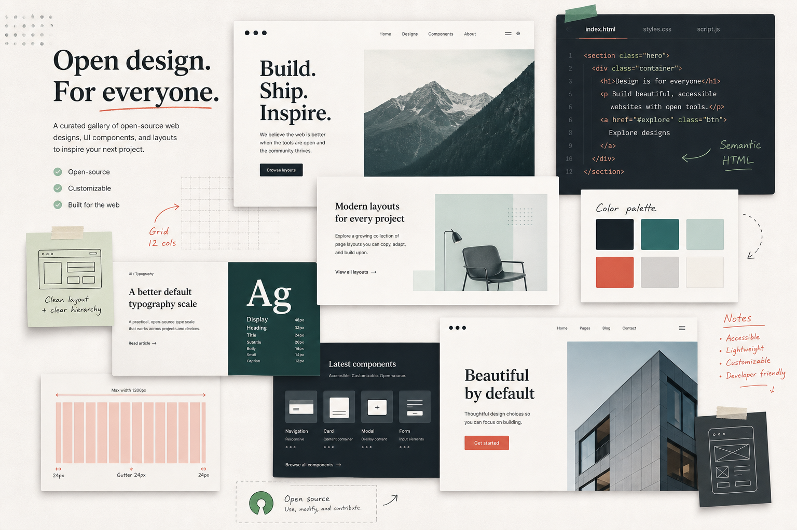

信息架构
页面第一屏解决什么问题，用户从哪里进入下一步，哪些内容应该被折叠。
Open source web design gallery
面向开发者的网页设计实验室：收集灵感、拆解布局、复刻组件，并沉淀成 GitHub 可发布的 Demo 与技术笔记。

Inspiration board
Design breakdown
页面第一屏解决什么问题，用户从哪里进入下一步，哪些内容应该被折叠。
颜色、字体、间距、圆角、图像风格和品牌感如何配合，而不是只看单张截图。
把 Hero、卡片、筛选器、定价表、文档页等结构拆成可复用前端组件。
输出 README、设计笔记、截图、Demo 链接和贡献方式，形成可持续项目。
Weekend publish target
推荐交付：一个包含首页灵感库、案例详情模板、设计拆解文档和贡献指南的静态站点。 后续可以逐步升级为社区投稿平台。